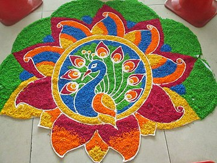
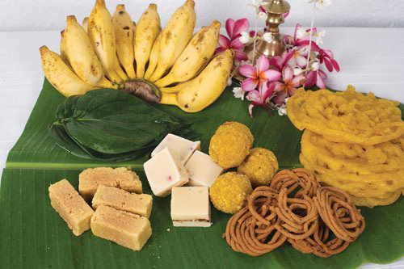
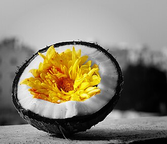

Let's welcome Puthandu with hope,joy,and gratitude.May this
Tamil New Year bring abundant happiness and properity to you and your family
The Tamil New Year or popularly known as Puthandu .will be celebrated on April 14, 2024. This day marks the beginning of the Tamil New Year and Tamilians all over the country celebrate this day with great enthusiasm and fervor. This day is celebrated on the first day of Tamil month, Chitterai as Tamil New year. This year, it will be celebrated today April 14, 2024. 
The Tamil New Year follows the spring equinox and generally falls on 14 April of the Gregorian year.The day celebrates on the first day of the traditional Tamil calendar and is a public holiday in both Tamil Nadu and Sri Lanka. The same date is observed as the traditional new year in Assam, West Bengal, Kerala, Tripura, Bihar, Odisha, Punjab, Himachal Pradesh, Haryana, as well as in Nepal and Bangladesh. Myanmar, Cambodia, Laos, Thailand, and Sri Lanka also celebrate the same day as their new year,likely an influence of the shared culture between South and Southeast Asia in the 1st millennium CE.
Tamil people celebrate Puthandu, also called Puthuvarusham, as the traditional "Tamil/New Year", states Peter Reeves.This is the month of Chittirai, the first month of the Tamil solar calendar, and Puthandu typically falls on 14 April. In some parts of Southern Tamil Nadu, the festival is called Chittirai Vishu. On the eve of Puthandu, a tray is arranged with three fruits (mango, banana and jack fruit), betel leaves and arecanut, gold/silver jewellery, coins/money, flowers and a mirror.[18] This is similar to the Vishu new year festival ceremonial tray in Kerala. According to the Tamil tradition, this festive tray is auspicious as the first sight upon waking on the new year day.Home entrances are decorated elaborately with colored rice powder. These designs are called kolams.
